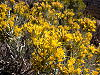

macronema

Has synonym(s): ericameria
Definition: Ericameria is a genus of North American shrubs in the family Asteraceae.Ericameria is known by the common names goldenbush, rabbitbrush, turpentine bush, and rabbitbush. Most are shrubs but one species (E. parishii) can reach tree stature. They are distributed in western Canada (Saskatchewan, Alberta, British Columbia) western United States (from the western Great Plains to the Pacific) and northern Mexico. Bright yellow flower heads adorn the plants in late summer. All the species have disc florets, while some have ray florets but others do not. Ericameria nauseosa, (synonym Chrysothamnus nauseosus), is known for its production of latex.
Source: Wikipedia
Wikipedia Page (Something wrong with this association? Let us know.)
Wikidata Page (Something wrong with this association? Let us know.)